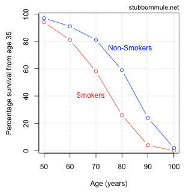

- Choosing the "right" plot
- How to create a plot
- How to create a plot that's not totally ugly
- Best practices and deadly sins of data visualization
Data visualization using R
Stefan Hartmann
Overview
Before we start...
Please open R and, ideally, RStudio.
Please open the Googledoc.
Before we start...
- Feel free to interrupt me at any time!
- There's A LOT of code in this presentation...
Before we start...
- Feel free to interrupt me at any time!
- There's A LOT of code in this presentation...
this <- is(what, code) {
looks, like
}
Before we start...
- Feel free to interrupt me at any time!
- There's A LOT of code in this presentation...
this <- is(what, code) {
looks, like
}
- You don't have to type all of the code, it's more important that you understand the conceptual background first.
- There will be some hands-on exercises.
Before we start...
- Feel free to interrupt me at any time!
- There's A LOT of code in this presentation...
this <- is(what, code) {
looks, like
}
- You don't have to type all of the code, it's more important that you understand the conceptual background first.
- There will be some hands-on exercises.
- Also, there will be some slides with more advanced stuff (and yellow background).
Why visualize?
For yourself
- Exploring your data
- detecting outliers
- checking assumptions of statistical tests or models (e.g. are the data normally distributed?)
- etc.
For others
- Showing your findings in a clear and efficient way
- Graphs tend to be more reader-friendly than tables...
- and much more reader-friendly than long inline lists!
Choosing the "right" plot
- What kind of data are you dealing with?
- What is your research question?
Types of data: Levels of measurement
- categorical variables:
- nominal variable: e.g. married, not married, divorced; Swiss, German, French...
- Subtype: binary variable, e.g. living/dead
- ordinal variable: e.g. gold medal, silver medal, bronze medal
- nominal variable: e.g. married, not married, divorced; Swiss, German, French...
- metric variables:
- interval variable: e.g. temperature (Celsius, Fahreneit)
- ratio variable: e.g. weight, temperature (Kelvin)
- (absolute / count variable: natural unit, e.g. number of students, age)
Alternative visualizations
- What kind of variable are we dealing with here?
- Which visualization seems most appropriate to you?

Alternative visualizations
- What kind of variable are we dealing with here?
- Which visualization seems most appropriate to you?

Alternative visualizations
- What kind of variable are we dealing with here?
- Which visualization seems most appropriate to you?

Alternative Visualizations
- from http://www.stubbornmule.net/2010/10/visualizing-smoking-risk/
- "Risk Characterization Theatre" from Rifkin & Bouwer (2007)
Alternative Visualizations

Nominal variable: Alternative visualizations
- Who among the expeRts is a native speaker of English?
The plot as a metaphor
"The essence of a graphic display is that a set of numbers having both magnitudes and an order are represented by an appropriate visual metaphor - the magnitude and order of the metaphorical representation match the numbers." (Wainer 1984: 139)

Best practice for reporting and displaying data
- Most importantly: Know your data!
- When reporting percentages, also report the denominator (i.e. the size of your sample)
- Example: "50% of academics are alcoholics" - it makes a difference whether your sample size is 2 or 2,000.
- When reporting comparisons of absolute frequencies, double-check if your samples are comparable.
- Example: "255 women agree that cats are adorable, but only 5 men." - it makes a difference whether your sample consists of 300 women and 300 men or of 300 women and 10 men.
- When reporting means, also report standard deviations.
- Example: [5,5,5,5,995] has the same mean as [1,180,300,223,146].
Best practice (Tufte 2001, Freeman et al. 2009)
- Show the data
- Avoid distorting the data
- Keep "Ink-to-data ratio" as low as possible
- Use meaningful x and y labels
- Avoid overplotting (e.g. 3-dimensional plots when only 2 dimensions are displayed)
Beware of overplotting!

Further tips
- If there is no natural order in your data, order them by value
Further tips
- Don't cut the y axis unless there are good conceptual reasons to do so.

From data to plot
Preparing data for visualization
- Use "tidy data":
- One variable per column
- One observation per row

"Long" vs. "wide" format
- wide format: repeated responses in a single row
- long format: repeated responses in different rows
Preparing data for visualization
- Golden rule: Don't be sloppy with your data!

Preparing data for visualization
- Data are often messy: What's wrong here?

Plot types
Scatterplots: When to use a scatterplot
- show / explore correlations between two variables
- metric data on both the x- and the y-axis
Creating a scatterplot
- First, let's create some data:
x <- c(1,3,3,4,7,8)
y <- c(1,1,3,9,8,5)
- and create a simple plot:
plot(x,y)
Creating a scatterplot

Creating a scatterplot

Creating a scatterplot
Creating a scatterplot
Customizing a scatterplot: Labels
plot(x, y, xlab = "xlab", ylab = "ylab", main = "main")

Customizing a scatterplot: Colors
plot(x, y, xlab = "xlab", ylab = "ylab", main = "main", col = "red")
Customizing a scatterplot: Colors
plot(x, y, xlab = "xlab", ylab = "ylab", main = "main", col = rgb(1, 0, 0, alpha = 0.5))

Some notes on color
- keep in mind that what you see on your screen is not always what you get on a printer or projector
- → make sure that your colors are not too similar!
- use color-blind friendly color schemes
- avoid red-green contrasts
- in many cases, it makes sense to combine color with other aesthetics like shape or line type
Some notes on color
- If you work with many different colors in a plot, check out R's color palettes, e.g.
rainbow,heat.colors,terrain.colors - Another useful resource is the
RColorBrewerpackage with a number of color-blind friendly palettes (argumentcolorblindFriendly = TRUE)
Customizing a scatterplot: Text
plot(x, y, xlab = "xlab", ylab = "ylab", main = "main", col = "red")
text(x = 5, y = 5,"Note the the added text! \n In a different color!", col = "blue")

Customizing a scatterplot: Shapes
plot(x, y, xlab = "xlab", ylab = "ylab", main = "main", col = "red",
pch = 20)
Customizing a scatterplot: Shapes - and sizes
plot(x, y, xlab = "xlab", ylab = "ylab", main = "main", col = "red",
pch = "\u263A", cex = 2)
- Any single character can be used.
par(mar = c(5, 4, 4, 2) + 0.1)
Customizing a scatterplot: Shapes
par_cur <- par() # save default graphics parameters
par(mar = c(1,1,1,1)) # change margins
plot(1:20, rep(10,20), pch = c(1:20), cex=1.5, ylab="", xlab="", yaxt="n", xaxt="n")
text(1:20, rep(8.5,20), labels = 1:20)
par(par_cur) # restore default graphics parameters
Customizing a scatterplot: x and y limits
plot(x, y, xlab = "xlab", ylab = "ylab", main = "main", col = "red",
xlim = c(0, max(x)),
ylim = c(0, max(y)))
Customizing a scatterplot: grid
plot(x, y, xlab = "xlab", ylab = "ylab", main = "main", col = "red",
xlim = c(0, max(x)), ylim = c(0, max(y)))
grid(nx = 0, ny=10)

- Note: default color is "lightgray", which is often invisible in print
- In many cases grids are a waste of ink.
Customizing a scatterplot: cex parameters
plot(x, y,
# cex = 2,
# cex.axis = 2,
xlab = "xlab", ylab = "ylab", # cex.lab = 2,
main = "main", # cex.main = 2,
xlim = c(0, max(x)), ylim = c(0, max(y)))
Customizing a scatterplot: cex parameters
plot(x, y,
cex = 2,
# cex.axis = 2,
xlab = "xlab", ylab = "ylab", # cex.lab = 2,
main = "main", # cex.main = 2,
xlim = c(0, max(x)), ylim = c(0, max(y)))

Customizing a scatterplot: cex parameters
plot(x, y,
cex = 2,
cex.axis = 2,
xlab = "xlab", ylab = "ylab", # cex.lab = 2,
main = "main", # cex.main = 2,
xlim = c(0, max(x)), ylim = c(0, max(y)))
Customizing a scatterplot: cex parameters
plot(x, y,
cex = 2,
cex.axis = 2,
xlab = "xlab", ylab = "ylab", cex.lab = 2,
main = "main", cex.main = 2,
xlim = c(0, max(x)), ylim = c(0, max(y)))

Adding datapoints from another dataframe
plot(x, y, col = "red", pch = 20)
points(x = c(4, 5, 6), y = c(2,6,8), col = "green", pch = 2)
Adding a legend
plot(x, y, col = "red", pch = 20)
points(x = c(4, 5, 6), y = c(2,6,8), col = "green", pch = 2)
legend ("topleft",
inset = c(0.01,0.01), # distance from the margins
pch = c(20,2), # the two point characters we used
col = c("red", "green"), # the two colors we used
legend = c("red dots", "green triangles"))

Adding a regression line
- In scatterplots, you often don't see the wood for the trees
- So you might want to visualize a general trend
- To this end, you can add a regression line
- i.e. the straight line that is closest to all points
Adding a regression line
- We use the
lmfunction for generating the model and theablinefunction, which adds straight lines to a plot
plot(x, y)
model <- lm(y ~ x)
abline(model)
Adding a lo(w)ess curve
- lowess/loess: locally weighted polynomial regression models
- "The basic idea underlying smoothers is to use the observations in a given span (or bin) of values of X to calculate the average increase in Y . You then move this span from left to right along the horizontal axis, each time calculating the new increase in y." (Baayen 2008: 34)
Adding a lo(w)ess curve
plot(x,y, main = "lowess")
lines(lowess(x, y))
scatter.smooth(x,y, main = "loess")

From scatterplot to lineplot
plot(x, y, type = "l")

From scatterplot to lineplot
plot(x, y, type = "b")
From scatterplot to lineplot: Line types
- Line types can be customized using the
ltyparameter:
plot(x, y, type = "b", lty = 2)
lines(x = c(2:7), y = c(4:9), lty = 3, col = "darkgrey")

When to use a lineplot
- Lineplots are useful for showing e.g. change over time
- Count variable on y-axis, (at least) ordinal variable on x-axis
- Why should we avoid nominal variables on the x-axis?
When to use a lineplot
- Lineplots are useful for showing e.g. change over time
- Count variable on y-axis, (at least) ordinal variable on x-axis
- Why should we avoid nominal variables on the x-axis?

Hands-on task: Creating a scatterplot
- Use
read.csvto read in the dataframe height_weight.csv - Plot height against weight.
Hands-on task: Creating a scatterplot
hw <- read.csv("examples/height_weight.csv")
plot(hw$height, hw$weight,
xlab = "Height", ylab = "Weight", main = "Height~Weight")
model_hw <- lm(hw$weight~hw$height)
abline(model_hw, col = "darkgrey", lty = 2)

Hands-on task: Creating a more complex scatterplot
- Use
read.csvto read in the dataframe Pokemon.csv - Plot height_m against weight_kg.
- Use the
colparameter to show the color of each Pokémon, as indicated in the "Color" column. - Use the
pchparameter to show the form of each Pokémon, as indicated in the "Form" column. - Hint: For the
pchpart, first look what happens when you tryas.numeric(pok$Form) - Finally, add a regression line to the plot.
Hands-on task: Creating a more complex scatterplot
# read data
pok <- read.csv("examples/Pokemon.csv")
# plot
plot(pok$Height_m, pok$Weight_kg, col = pok$Color, pch = as.numeric(pok$Form),
xlab="Height", ylab="Weight", main = "Height~Weight, Pokémon")
model_pok <- lm(pok$Weight_kg~pok$Height_m)
abline(model_pok)
Hands-on task: Creating a more complex scatterplot

Creating a barplot
- Barplots are useful to show counts of categorical variables (e.g. number of men vs. number of women in parliament)...
- summary statistics (usually: means) of metric variables across different categories (e.g. mean height of humans vs. Klingons)
- But beware: Bar plots can hide information, cf. #barbarplots ("Friends don't let friends do bar charts")

Creating a barplot
- Main argument of the
barplot()function isheight - This can be a vector or a matrix
- Let's try it out:
# define a vector
bar_heights <- c(50, 80)
barplot(bar_heights)
Creating a barplot
- The labels of the bars can be specified using
names.arg:
barplot(bar_heights, names.arg = c("stuff", "more\nstuff"))

Creating a barplot
- The other arguments are largely the same as in the case of scatterplots:
barplot(bar_heights, names.arg = c("stuff", "more\nstuff"),
main = "I'm a barplot", xlab = "I'm the x label", ylab = "I'm the y label",
cex.main = 2, cex.lab = 2, cex.axis = 2, cex.names = 2)

Creating a barplot
- The
spaceargument defines the space between bars, default is 0.2 ifheightis a vector
Creating a barplot
- The
spaceargument defines the space between bars, default is 0.2 ifheightis a vector

Creating a barplot
- The
spaceargument defines the space between bars, default is 0.2 ifheightis a vector

Creating a barplot
- The
spaceargument defines the space between bars, default is 0.2 ifheightis a vector
Creating a barplot
- The
spaceargument defines the space between bars, default is 0.2 ifheightis a vector
Creating a barplot
- Knowing the width of bars and the space between them is important if you want to add text
- To simplify the task, you can set
space = 0
barplot(bar_heights / sum(bar_heights), # get relative frequencies
names.arg = c("stuff", "more\nstuff"), space = 0)
text(x = c(0:1)+0.5,
y = (bar_heights / sum(bar_heights)) - 0.05,
labels = bar_heights)
Creating a barplot
- Or you can use the magic of vector addition and multiplication
0.5:1.5yields {0.5,1.5},0.2 * 1:2yields {0.2, 0.4} (= 0.2 * 1, 0.2 * 2)
barplot(bar_heights / sum(bar_heights), # get relative frequencies
names.arg = c("stuff", "more\nstuff"))
text(x = (0.5:1.5) + (0.2 * 1:2),
y = (bar_heights / sum(bar_heights)) - 0.05,
labels = bar_heights)
Creating a barplot from a matrix
bar_matrix <- matrix(c(2,4,5,4,3,3,7,6), nrow = 2)
bar_matrix
## [,1] [,2] [,3] [,4]
## [1,] 2 5 3 7
## [2,] 4 4 3 6
Creating a barplot from a matrix
barplot(bar_matrix)
Generating a barplot from a matrix
barplot(bar_matrix, beside = T)

Creating a barplot
Hands-on example: action-sentence compatibility task
Hands-on task: Creating a barplot
- Task: Read in file actionsentence.csv with
read.csv - Inspect the data using
head,str, andView - Subset the data: Omit rows with
direction == "distractor"
Hands-on task: Creating a barplot
rt <- read.csv("examples/actionsentence.csv", fileEncoding = "UTF8")
rt <- subset(rt, direction != "distractor")
Hands-on task: Creating a barplot
- No we want to show the means for "toward" and "away" sentences using a barplot.
- We want to abstract over the individual subjects, so it makes sense to transpose the table from wide to long format first.
library(reshape2)
rt2 <- melt(rt, id.vars = c("ID", "sentence", "direction"))
Hands-on task: Creating a barplot
- No we want to show the means for "toward" and "away" sentences using a barplot.
- We want to abstract over the individual subjects, so it makes sense to transpose the table from wide to long format first.
library(reshape2)
rt2 <- melt(rt, id.vars = c("ID", "sentence", "direction"))
# same result but with (imho) more complicated syntax: "gather" from tidyr package
library(tidyr)
rt3 <- gather(rt, variable, value, -ID, -sentence, -direction)
all(rt2==rt3) # cheks if all values are identical
Hands-on task: Creating a barplot
- No we want to show the means for "toward" and "away" sentences using a barplot.
- We want to abstract over the individual subjects, so it makes sense to transpose the table from wide to long format first.
library(reshape2)
rt2 <- melt(rt, id.vars = c("ID", "sentence", "direction"))
# same result but with (imho) more complicated syntax: "gather" from tidyr package
library(tidyr)
rt3 <- gather(rt, variable, value, -ID, -sentence, -direction)
all(rt2==rt3) # cheks if all values are identical
## [1] TRUE
Hands-on task: Creating a barplot
# get mean values for "away" and "towards" subsets:
rt2_away <- subset(rt2, direction == "away")
rt2_toward <- subset(rt2, direction == "toward")
mean_away <- mean(rt2_away$value)
mean_toward <- mean(rt2_toward$value)
# combine both to one vector
rt_means <- c(mean_away, mean_toward)
rt_means
## [1] 1867.9 1789.5
Hands-on task: Creating a barplot
barplot(rt_means, names.arg = c("away", "toward"))

Barplot: Adding confidence intervals
- The mean alone doesn't say very much
- As mentioned before, [5,5,5,5,995] has the same mean as [1,180,300,223,146]
- This is why researchers tend to add error bars to barplots
- in most cases, these error bars represent 95 % confidence intervals...
- i.e. the interval where we can be 95% confident that it contains the true mean.
Barplot: adding confidence intervals
- We can obtain the confidence intervals for each of our two means using the
t.test()function
t_away <- t.test(rt2_away$value)
str(t_away)
## List of 9
## $ statistic : Named num 14.8
## ..- attr(*, "names")= chr "t"
## $ parameter : Named num 29
## ..- attr(*, "names")= chr "df"
## $ p.value : num 4.65e-15
## $ conf.int : atomic [1:2] 1610 2126
## ..- attr(*, "conf.level")= num 0.95
## $ estimate : Named num 1868
## ..- attr(*, "names")= chr "mean of x"
## $ null.value : Named num 0
## ..- attr(*, "names")= chr "mean"
## $ alternative: chr "two.sided"
## $ method : chr "One Sample t-test"
## $ data.name : chr "rt2_away$value"
## - attr(*, "class")= chr "htest"
Barplot: adding confidence intervals
- We can use the
arrowsfunction to plot confidence intervals arrowsis usually used to draw arrows (duh!)- But these arrows can be customized in very useful ways...
plot(c(1:10), c(1:10), type = "n")
arrows(x0 = 2, x1 = 4,y0 = 5, y1 = 5)
arrows(x0 = 8, x1 = 8, y0 = 5, y1 = 9,
angle = 90, # set angle to 90 degrees = flat arrow head
code = 3) # draw arrow head on BOTH ends of the "arrow"
Barplot: adding confidence intervals
ci_away <- t.test(rt2_away$value)$conf.int
ci_toward <- t.test(rt2_toward$value)$conf.int
barplot(rt_means, names.arg = c("away", "toward"))
par(xpd=T)
arrows(x0 = 0.7, x1 = 0.7, y0 = ci_away[1], y1 = ci_away[2], angle = 90, code = 3, length = .2)
arrows(x0 = 1.9, x1 = 1.9, y0 = ci_toward[1], y1 = ci_toward[2], angle = 90, code = 3, length = .2)

Hands-on task: Creating a dodged barplot
- Read in the file
avengers.csv - Plot the screentimes of Thor and Iron Man in the three Avengers movies as a dodged barplot (i.e. a barplot with side-by-side bars).
- Hint: For a dodged barplot,
barplot()needs a matrix as input. This is a bit tricky - toy around withmatrix()to create a matrix that looks like this (without the row and column names)
## Avengers1 Avengers2 Avengers3
## Iron Man 37 45 18
## Thor 25 14 14
- Another hint: It might help to reorder the data. Using
avengers[order(avengers$character),]you can sort them by the "character" column.
Hands-on task: Creating a dodged barplot
# read in data
avengers <- read.csv("examples/avengers.csv")
# sort by "character" column
avengers <- avengers[order(avengers$Character),]
avengers_matrix <- matrix(avengers$Screentime, ncol = 3, byrow = T)
Hands-on task: Creating a dodged barplot
# plot
barplot(avengers_matrix, beside = T, names.arg = c("Avengers 1", "Avengers 2", "Avengers 3"),
legend.text = c("Iron Man", "Thor"))

Graphical parameters
With the help of graphical parameters, you can change the appearance of your plot. See ?par for more information. Some of the most important ones:
mar: margins.xpd: If TRUE, you can plot outside the plot region. If FALSE (the default), plotting is confined to the plot region.mfrow: numer of c(rows, columns)bg: background color (or no color if you choose "transparent"; default is white)- Type
par()to see the current settings (= the default values if you haven't changed them). This can come in handy if you want to change parameters and then restore the defaults afterwards. - You can even store the current values as an object by typing e.g.
par_default <- par()and later on restore the current settings viapar(par_default).
Saving graphs
- In RStudio, you can use the "Export" button in the plot window
- However, the graphics files generated this way have low resolution (72dpi), unless you export an svg image
- This is why you should use
png(),tiff(),jpeg(), orbmp()instead.
png(filename = "myplot.jpg")
plot(x,y)
dev.off()
Saving graphs
- Saving graphs as vector graphics (SVG) has its advantages...
- but not all programmes can handle SVG files ☹
- Most publishers request PNG or TIFF files (some are also ok with JPG or BMP)
Saving graphs: Layout
- Often you'll want to arrange plots in rows and/or columns
- You have already encountered
par(mfrow=c(nrow,ncol)) - More complex arrangements are possible with
layout - To use this function, you first have to define a matrix
m <- matrix(c(1,2,2,
1,2,2),
nrow = 2, byrow = T)
Saving graphs: Layout
layout(m)
barplot(c(20, 40), names.arg = c("a", "b"))
plot(x = c(7,9,15,24), y = c(8,15, 40, 32), type = "l", ylab="y", xlab="x")

par(par_cur)
Saving graphs: Layout
- In order to export the plot, we just add the graphics device commands
png()(or the like) anddev.off():
png("myfile.png", width = 7, height = 7, un = "in", res = 300)
layout(m)
barplot(c(20, 40), names.arg = c("a", "b"))
plot(x = c(7,9,15,24), y = c(8,15, 40, 32), type = "l", ylab="y", xlab="x")
dev.off()
## quartz_off_screen
## 2
par(par_cur)
More things to explore
- lattice graphics
- ggplot2
- plotly / shiny for interactive visualizations
- GoogleVis motion charts
- and a lot more!
References
- Baayen, R. Harald. 2008. Analyzing Linguistic Data: A Practical Introduction to Statistics Using R. Cambridge: Cambridge University Press.
- Freeman, Jenny V., Stephen John Walters & Michael J. Campbell. 2008. How to display data. Malden, Mass: BMJ Books.
- Rifkin, Erik & Edward Bouwer. 2007. The illusion of certainty: health benefits and risks. New York, NY: Springer.
- Tufte, Edward R. 2001. The visual display of quantitative information. 2nd ed. Cheshire: Graphics Press.
- Wainer, Howard. 1984. How to display data badly. The American Statistician 28(2). 137–147.